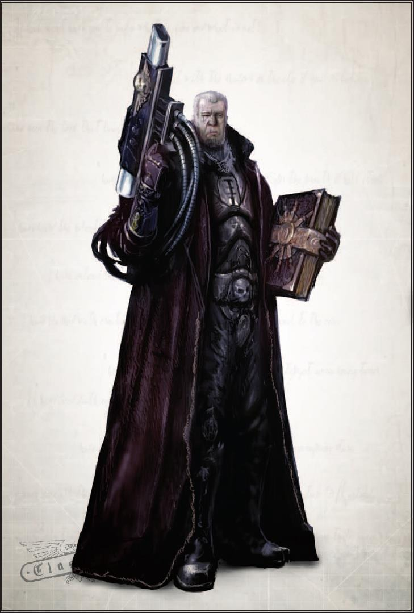
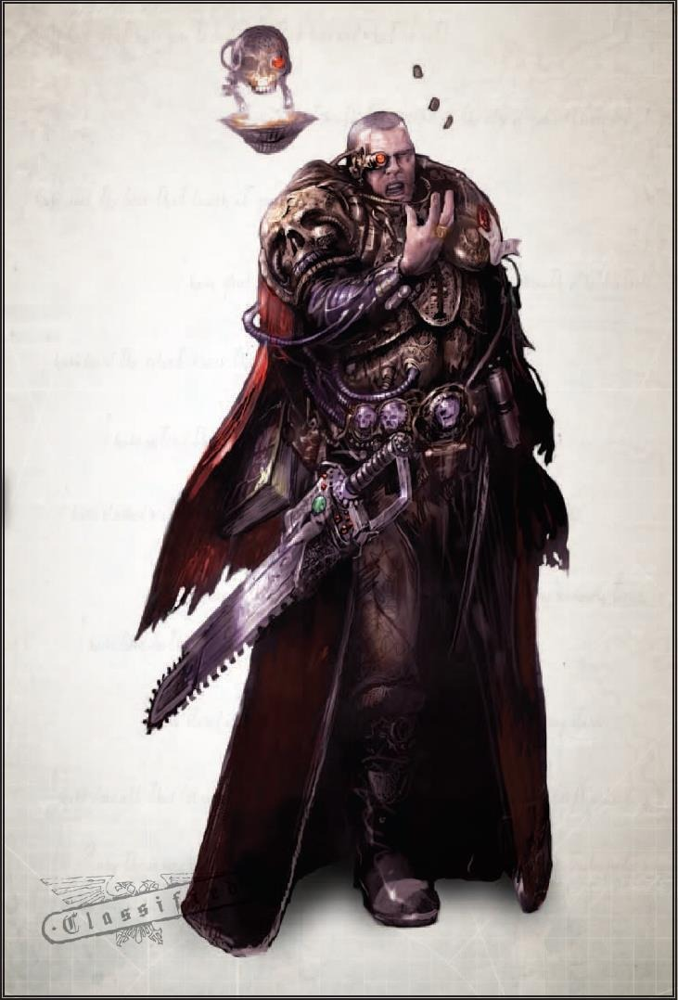
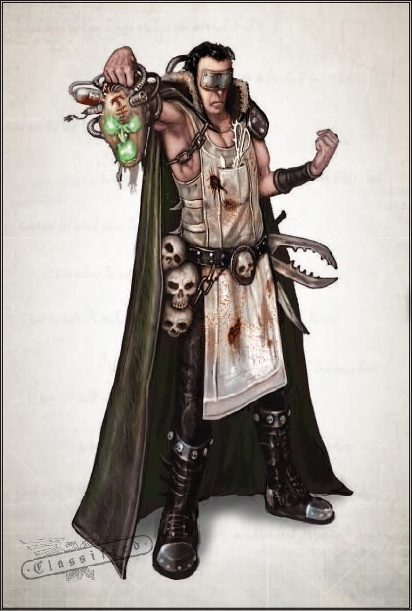

疯狂、绝望与悖论：当最坚强的思维失败时
一个人只有盯着疯子、怪物和来自现实宇宙之外的东西的面孔看得足够久，才会开始追问人
类在宇宙中的位置。对许多人来说，答案只会回归对帝皇和人类未来的信仰。然而，其他人
却陷入了疯狂，他们的脑海中总是萦绕着启示的片段和噩梦。审判庭成员最重要的是接受过
训练，有条件抵御这种经历对心灵造成的压力--但有时，无论是突如其来的非凡压力，还是
缓慢而难以言喻的腐蚀，即使是最强大的心灵也会崩溃。在某些人身上，这种对心灵的伤害
可能表现为（至少表面上）激进主义。这些人所表现出的激进主义只能笼统地称之为激进主
义，因为他们的行为是由破碎的心灵所驱使的，他们的感知被黑暗宇宙的笑声和自身妄想的
产物所扭曲。陷入疯狂的审判官虽然非常罕见，但却异常危险，因为他们的个人力量是如此
之大，以至于在大多数情况下，他们唯一的制衡就是同侪的评判。一些审判官在服役数百年后，发现自己对战争的徒劳无益充满了绝望。他们的灵魂被怀疑和无助吞噬，他们看到黑暗步步逼近，人类的敌人越来越多，越来越强大，而人类却越来越弱小。绝望和野蛮的行为会因此滋生。在一生的恐怖中，最罕见、最危险的反应就是坚信过去、现在和未来的方方面面都有某种隐藏的目的或模式。
革职令：埃利亚·尼弗提斯
及神圣审判庭的权威和威严，我宣判你，埃利亚·尼弗提斯，恶魔，并将这张纸上所见证的
罪行加诸于你的灵魂：你曾经放弃保护黄金王座的王国和臣民的誓言，你曾经查阅过“凄凉
之文”，曾经使用过你在那里找到的知识，你曾经拿起诅咒者的工具，并通过你的手将它们
的枪口转向你的兄弟姊妹。在黄金王座的注视下，在同侪的审判下，你要为自己的罪行负责，并在负责的过程中可能受到谴责。如果你被定罪，你兄弟姊妹的脸将从你们身上移开，你将在天平上接受应有的惩罚。你的灵魂在铁锤之下，你的身体在利斧之下，你的眼睛在剑尖之下。愿最伟大、最有权势的神—泰拉上保护所有人的帝皇--的智慧权衡一切。
艾古特·康斯坦丁尼德斯·凯丁
大审判官，卡利西斯密会召集人，哈拉提克广域的保护者
5385777.M41
90 / 105
相关信件
分类：黑暗欧米茄
日期： 5301814.m41
作者： **姓名保密
主题： 审判官[机密]与疑似苍白大群裹尸布大师戈尔加罗格·瓦尔塔的会面记录
收件人： 审判官马尔
以下记录是我根据你的建议获得的，你建议我不要把精力集中在那些惯于使用激进方法的人
身上，而是集中在那些没有任何激进倾向的人身上。事实上，审判官[机密]与已知异端打交
道的可能性不低，更何况是像戈尔加罗格·瓦尔塔这样卑鄙的异端。这里的记录是通过秘密手段获得的录音记录。为便于理解，我将指出这次会面发生在5.250.814.M41 的苦痛之索号的废弃船舱中。从双方的举止可以看出，他们并非第一次见面。在整个笔录中，审判官[机密]被称为 "I"，戈尔加罗格·瓦尔塔被称为 "V"。
[记录开始]
V：幸会，我的朋友
I：你想要什么？
V：我亲爱的、最伟大的审判官，我怎么会不想和你在一起呢？
I：直说吧，这样我就不会把你开膛破肚，烧成灰了。V：你为什么总是这样？我们并没有什么不同；我们都有希望达到的目的，并在对方身上找到了达到这些目的的手段。你希望我以变种人、女巫、异端和叛逆者的身份被烧死，而我希望你因为维护谎言和暴政而慢慢从内心被撕碎，但这并不妨碍我们进行友好的小对话。
I：说重点。V：很好。在 50 个标准年内，已经潜入芬克斯世界马格纳戈尔斯克巢都的我的同胞们，将一举攻占法务部要塞、马格纳戈尔斯克领主的领地和主要的行政大教堂。他们的目的是杀死里面的所有人，以此号召其他同类起来烧毁巢都。这将是特伦奇人的又一次崛起，事实上非常
光荣。如果你们不阻止的话。I：他们怎么可能做到？全副武装的起义军不可能这么快就渗透到巢都这么高的地方。V：只要不出十个我们的同类就能做到：他们当中起码有五个有着最高天赋的人。
I：王座在上！
V：你找他们是找不到的：他们太厉害了，连你都对付不了，但他们用一个商人做中间人。他叫科利塔尔，科利塔尔商会的杰罗提乌斯·科利塔尔。跟着他，他会带你找到他们。
I：还需要什么吗？
V：如果能说声谢谢就更好了，不过我想我听不到这个了。[移动和脚步声消失--当声音捕捉恢复时，声音提高了，就像在远处呼唤]I：你为什么要这样做：背叛自己的同类？V：我们每个人都有自己的战争要打，我公平的朋友，还是你认为只有我在为你服务？
[记录结束]
91 / 105
卡利西斯激进分子
本章展示了在卡利西斯星区活动的六名最臭名昭著或最有影响力的激进分子。这些激进分子
在审判庭中大多声名狼藉，许多纯净派不惜一切代价也要让他们消声匿迹，甚至将他们彻底
消灭。然而，许多审判官却采取了更为温和的立场，与大审判官泽贝稳健而耐心的态度如出
一辙。这里介绍的激进派主要是单独行动的个人，尽管他们可能与本书（指激进派手册）以
及《黑暗诸神的信徒》中的某些组织和派别有联系。
是敌是友
本章介绍的主要激进分子既可以协助侍僧，也可以阻碍他们。其中一些激进分子甚至是担任
玩家组织领导审判官的理想人选！如果 GM 选择在游戏中使用这些激进分子作为盟友，那么
他可以按照自己的意愿介绍他们：或许是一直支持侍僧取得成功的人，或许是希望引导他们
朝着 "正确 "方向前进的新朋友。然而，作为敌人，这些激进分子中的任何一个都可以成为令人钦佩的宿敌。宿敌是一类会反复出现的反派人物，侍僧们曾挫败过他的阴谋，而他的复仇之心又在悄悄地追随着侍僧们的脚步。宿敌是长期跑团战役中的经典情节设置；没有什么比发现宿敌是他们所揭露的阴谋的幕后黑手更能激发玩家的热情了，也没有什么比最终扳倒宿敌更能让玩家感到满足了。为了帮助 GM 在游戏中引入并使用宿敌，有几条准则值得注意：1. 不应该在每个异端背后都放一个宿敌：虽然宿敌在游戏中反复出现很重要，但如果他无处不在，其影响就会减弱。最好把他留在主要事件中。2. 宿敌应伤害侍僧：要让宿敌成为有效的威胁，他必须真正有潜力和动机去损害、破坏或杀死侍僧以及他们的盟友和朋友。更重要的是，他还必须有能力逃脱惩罚，至少在一段时间内。这样，宿敌就很容易成为玩家真正厌恶的人物，玩家几乎会不惜一切代价消灭
他，成为玩家爱恨交加的反派。3. 在最终决战之前，宿敌应该逃之夭夭：为了成为 "侍僧 "渴求复仇的有效焦点，他们必须多次面对自己的宿敌，并让他从指缝中溜走（或者打败他后才发现他背后还有人操控—那位才是真正的宿敌！）。这会使得最后的胜利更加令人满意。
把激进派设为反派
激进派的真正诅咒在于，他认为自己是为帝国（即使不是全人类）谋福利的英雄。因此，作
为一个反派，激进分子可以是一个悲剧性的堕落人物，也可以是一个真正误入歧途的怪物，他成为了自己长期追捕的对象。在使用激进分子作为反派角色时，要记住的关键是他不仅仅是一个力量和能力的集合体，他还有自己的动机和目的！创建反派的最佳方法是，首先明确他在活动中的角色。要创造一个酷酷的反派，最好的诀窍之一就是给他一个好的叙事、背景故事、个性、自己的风格和动机。许多 GM 甚至会赋予反派一个标志，如可识别的作案手法、视觉风格或专属目标。这些都是造就一流反派的要素，而不仅仅是一套特性、天赋和游戏机制。一旦 GM 对反派 "是什么 "和 "是谁 "有了概念，
92 / 105
那么就该拿起规则书给他下定义了，而不是反过来！
使用本章
这些人中的每一位都是人形怪物；他们的罪行数不胜数，暴行罄竹难书。他们中的每一个人
都是任何一群侍僧都值得尊敬的对手，他们中的任何一个人都可以成为一场战役的宿敌，或
者只是为一次冒险提供一个令人难忘的反派角色。
通缉犯简介？
本章不包括卡利西斯区通缉的异端的简介。由于这些激进分子的危险性、能力和力量尚未确
定或明确，因此本章特意省略了这些内容。这些因素由 GM 决定；他们可以被塑造成一个强
大的反派，也可以成为一群激进派侍僧有力而勤奋的导师。本节将介绍一种新天赋--命运触碰，它非常适合用来塑造强大的反派—击倒这类反派所需要
的往往不仅仅是一颗幸运的爆弹。
命运触碰（天赋）
先决条件： 仅限于具有自由意志的非玩家角色；不可用于恶魔和其他非生物。NPC 拥有的命运点数等于其意志力加值的一半（四舍五入）。他可以用与玩家角色完全相同的方式使用这些命运点，甚至可以 "燃烧 "一个命运点数，以便在死亡和毁灭中幸存下来（如果可能的话），不过这应该总是发生在 "镜头之外"。如果在任何特定情况下，该 NPC 会被击败，而场景的解决对侍僧有利，那么该 NPC 将在另一天返回（很可能是为了复仇！）。此外，正义之怒的规则也适用于该 NPC。
93 / 105
审判官费尔罗斯·盖尔特（Felroth Gelt）
姓名：费尔罗斯·斯塔西斯·盖尔特
已知别名：钢刀领主、鬼魅猎手
已知合伙人或组织：黑色卫军、圣德鲁苏斯之凯旋号船长劳米尔、行商浪人塞伦·特拉维乌斯
偏好的行动方式：盖尔特喜欢与庞大的侍僧和前合伙人网络合作。盖尔特是一个充满魅力和
灵感的人，他可以号召整个卡利西斯区的诸多特工为他服务。众所周知，他曾利用被囚禁在
重力悬浮营养槽中的灵能者，为他们提供一定程度的保护，使其免受亚空间之力的影响。盖
尔特并不害怕亲自深入调查，他更喜欢 "亲力亲为 "的调查方式。
费尔罗斯·盖尔特是一名叛变审判官，被三角宫认定为激进派和异端。盖尔特曾是一名独占
派纯净主义者，他在整个卡利西斯星区追捕帝国的敌人长达三个多世纪。盖尔特胆识过人，很快赢得了大审判官凯丁的青睐，在他的指导下，盖尔特的事业蒸蒸日上。他探索过死亡世界，搭乘过帝国海军的战舰，在战场上指挥过一支属于自己的暴风兵，还俘虏了一批灵能者供自己使用。他对抗过各种各样的敌人，从变种人到野兽，再到更奇怪的东西，如金诺格的恶魔和坎特雷斯恶臭之灵，他也因此而声名大噪。然而，每一次胜利都是有代价的：他的侍僧们付出了生命的代价，他曾经坚定的独占派信条也逐渐被消磨殆尽。每一次成功都显得空洞无物，缺乏真正的重要性。盖尔特将注意力集中在将他的日记抄录成册，以指导年轻的审判官和侍僧，传授一些他来之不易的生存经验。这一切在被诅咒的卡沙世界发生了改变。盖尔特曾前往那里协助镇压 "伪者之乱"，这是一场由可怕的异端邪教引发的起义。正是在这场动乱中，他第一次见到了审判官德莱文，一个阴沉而又充满干劲的人，让盖尔特想起了年轻时的自己。但是，盖尔特坚定不移地走着纯净派的道路，而德莱文却选择寻找他能找到的任何好处。随后，盖尔特见证了德莱文的劳动成果：用混沌之力对抗帝皇的敌人。盖尔特被深深地吸引住了，他陪同德莱文在帝国空间内外进行了进一步的探险。在接受了赞斯派的教诲之后，盖尔特年迈的身躯在亚空间之力的作用下焕发了新的活力，他多年的服务和经验现在又转向了一个全新的方向。自从皈依赞斯派教义后，盖尔特放弃了他的日记、他的侍僧以及他以前生活的方方面面。他选择了献身于寻找更多的工具来对付人类的敌人，随后便从已知空间消失了。盖尔特从此杳无音信，他的失踪让审判庭的一些成员得出结论：事实上，他根本就不存在；留下的日记和笔记一定是编造出来的，目的是分散注意力或给不警惕的人设下陷阱。这些谣言还宣称，只
有大审判官泽贝知道真相。
94 / 105

95 / 105
审判官阿克图鲁斯（Arcturos）
姓名：斯塔文·阿克图鲁斯
已知别名：寻觅着、七哀猎犬
已知合伙人或组织：暮光之刃的乌尔希尔·艾拉里昂、呐喊缄默、窄影剧团
偏好的行动方式：阿克图鲁斯使用从艾达灵族神秘学者那里学到的方法研究未来，他的每一
次行动都以他预言的结果为基础。迄今为止，他的方法被证明准确性不高，他也不止一次从
死胡同中退缩。尽管如此，他仍然坚持着自己对异形科技的狂热信念。
作为异形融合派的异形物种学者之一，审判官阿克图鲁斯是一个古老而聪明的人，他也一直
坚持己见。阿克图鲁斯曾经是异形审判庭中一名严谨细致的成员，在他毕生研究艾达灵族及
其在朦胧星域的影响时，他开始被吸引到卡利西斯星区。数十年来，阿克图鲁斯一直在哥特
星区追踪这一神秘异形文化的任何蛛丝马迹。他发现了一些诱人的线索和传闻，但很少有确
凿的证据。然而，他的第一次真正突破发生在与一艘不明异形飞船在哈泽洛斯深渊交战之后。阿克图鲁斯的飞船瘫痪了，在敌舰的武器面前束手无策。就在这千钧一发之际，一艘艾达灵族巡洋舰插手了，救出了阿克图鲁斯，并用脉冲光矛击退了对方的飞船。这艘飞船属于乌尔希尔·艾拉里昂，一位臭名昭著的艾达灵族海盗，在卡利西斯星区的太空航线上游荡。据说艾达灵族罕见的先知之一曾在他的船上居住过，传言这位先知在艾拉里昂的舰船 "暮光之刃 "上逗留期
间向阿克图罗斯传授了丰富的知识。后来发生了什么，一直是个谜。有人说阿克图鲁斯成为了艾达灵族的客人，也有人说他被异形巫术带到了遥远的星际。不管真相如何，阿克图鲁斯回来后，已经完全变了一个人。阿克图鲁斯迅速成为异形融合派最狂热的成员之一，据说他的随从中有许多异形。与阿克图鲁斯交流过的人都说，他现在痴迷于艾达灵族通过一系列具有灵能活性的符文石来预测未来的方法，他不断地实践着这种邪恶的占卜方式，他的一举一动都以他从符文石的图案中看到的东
西为依据。阿克图鲁斯最近把注意力转移到了探索科罗努斯扩张区的行商浪人身上。他的研究表明，这个星区所面临的可怕威胁可能就是从光晕星群这个未知区域开始的。
96 / 105

97 / 105
海特什·凯恩（Hettesh Kane）
姓名：海特什·凯恩
已知别名：多洛罗萨教授、巫术掌控者、内在之火保管员
已知合伙人或组织：燃烧公主、蒙特斯克（已故）、理智者詹尼
偏好的行动方式：凯恩倾向于在幕后行动，利用他的灵能力窥探目标，并在行动前尽可能了
解一切。凯恩有几名洗脑特工为他服务（因为他们只知道为他服务），而他对各种灵能天赋
的掌握让他在出错时几乎可以逃脱任何陷阱。
合法灵能者海特什·凯恩曾经是灵能经院的著名教师。随后，他成为了异端审判庭的忠实成
员，在整个帝国追捕并消灭非法灵能者。然而，凯恩的经历和个人信仰使他坚信，只要经过
适当的训练并拥有坚定的道德信念，灵能者几乎可以实现任何事情。随着时间的推移，凯恩
开始训练和教导那些被他捕获的人，而不是直接消灭他们。虽然凯恩并不总是成功，但他试
图把那些曾经的敌人变成黄金王座的特工。他最著名的失败案例之一是一个名叫蒙特斯克（Montesque）的骄傲年轻学生，他是库尔斯（Kulth）人。蒙特斯克展现出了惊人的潜力，在短短几年的训练后，几乎在所有方面都超越了他的导师。凯恩很快就意识到，他的学生是一个阿尔法级的灵能者，而且蒙特斯克的能力正在迅速增长，越来越难以控制。凯恩随即杀死了这个年轻的灵能者，并对蒙特斯克独特的大脑进行了实验，最终在他昔日学生的头骨上建造了一个不同寻常的灵能聚焦装置，以放大
和突破自己强大力量的极限。海特什·凯恩的灵能力属于德尔塔级上等，但比他的原始能力更危险的是他所表现出的精湛技艺。精巧和技艺是凯恩的标志，虽然他并不鄙视非灵能者，但他的确同情他们。他的注意力集中在一个全人类都能按照自己的意愿塑造亚空间的时代，凯恩决心不惜一切代价确保这一未来的实现。他强烈认同多灵能者派，尽管他尚未完全效忠于此。
98 / 105

99 / 105